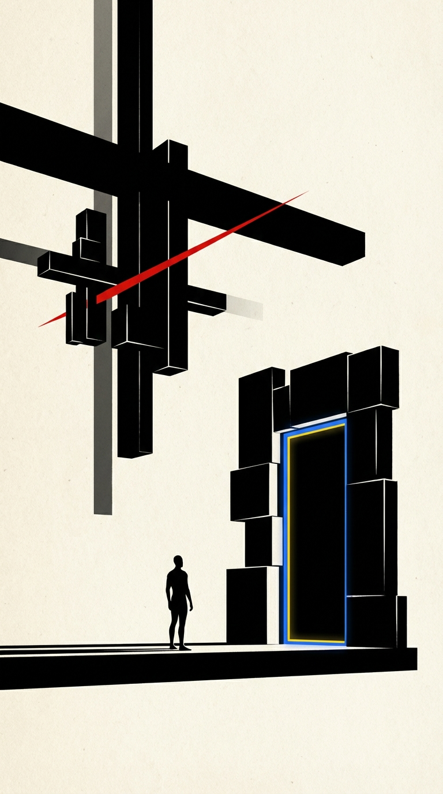

Today’s Artifact · Style 003
A sharper re-entry surface for the current moment: not just what exists in the ecosystem, but what should now become real enough to shape decisions, action, and consequence.
POSTER LOGIC / HARD EDGES / THOUGHT UNDER PRESSURE
THE QUESTION IS NO LONGER WHETHER THE SYSTEM CAN PRODUCE IDEAS.
THE QUESTION IS WHICH IDEAS DESERVE EMBODIMENT.